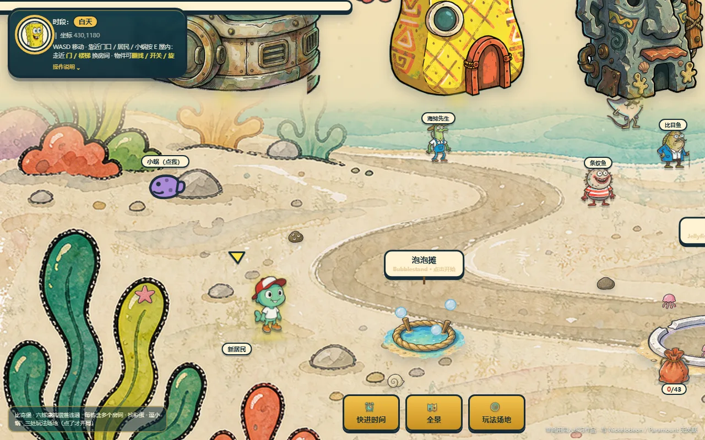
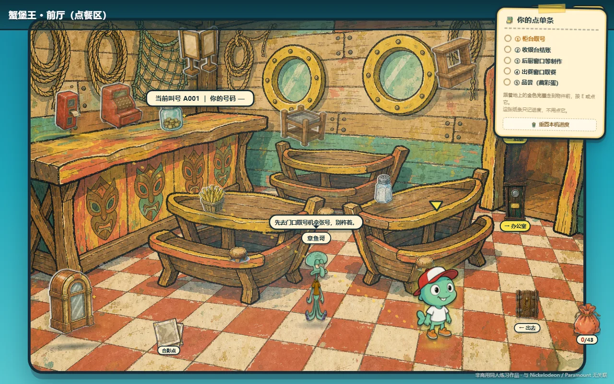
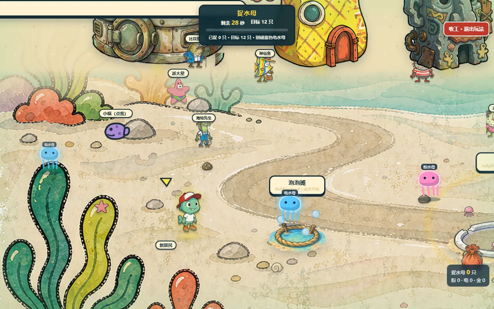
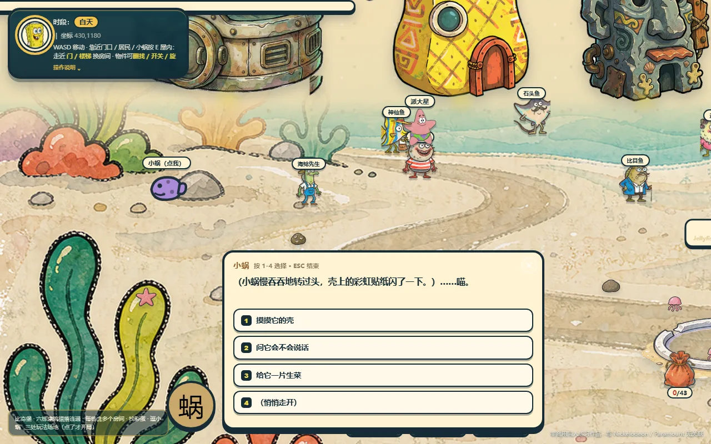
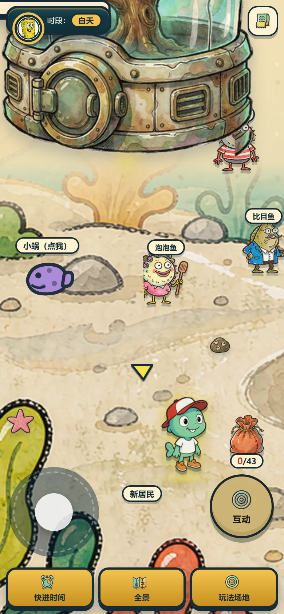

作品 07 / WEB GAME
比奇堡沉浸式小镇Bikini Bottom · 一天
一个能走进去的海底小镇：14 间手绘房间、几十个能翻能捡的物件、三个小游戏，和一个会在你靠近时亮起来的世界。
- 平台
- 桌面与移动端 Web
- 技术
- 原生 JS · 手绘位图资产管线 · localStorage 存档
- 状态
- 线上可玩（v12）

一句话定位
把大家熟悉的比奇堡，做成可以在里面散步、串门、翻抽屉、玩小游戏的 2.5D 网页小镇。不是还原动画，是借这个海底世界搭一套可交互的轻等角场景。
它是什么
14 间手绘房间——蟹堡王、凤梨屋、石头屋、章鱼哥家、水母田……每间都塞满可点的小道具；世界大地图上能走来走去，靠近门、居民或物件会亮起标签和一圈柔光。三个嵌入式小玩法：捉水母（打地鼠式）、吹泡泡、空手道连击。翻找出来的零碎和打小游戏赢的战利品，都会收进「藏品册」。
资产全部是手绘位图，没有用 CSS 或矢量现拼——从角色立绘到房间地板、再到界面图标，都是同一套手绘语言。
几个判断（做的时候纠结什么）
画风。原作是粗黑歪扭描线 + 不透明平涂 + 水彩颗粒做旧的扁平 2D 卡通风，不是精致 3D。一开始被生图工具带偏成了「微缩手办」，推翻重做，最终锁死「手绘语言 + 轻等角 + 形体按原作纠正」。
抠图。生图工具只出纯色底还带水印，没法直接要透明。最后定下：提示词锚点一个字不改，透明底一律由后处理用连通域 flood fill 保证，绝不为了迁就工具去改写画风。
合规。这是非官方同人：神似非形似，提示词里不放作品名、角色名、商标和招牌文字，页面也标注「与权利方无关」。
怎么做的
资产管线。锁风格锚点 → 批量生成 → 程序化抠图去水印 → 裁紧居中 → 出 1×/2×/solid 三件套，每个批次都跑自动质检（边距、透明占比、水印检测），确保 200+ 文件风格一致。
交互层。用原生 JS 写：世界相机跟随、点地行走（手机端）、物件翻找/拾取的心跳换图、掉落物飞入口袋、轻量 localStorage 存档让进度留在本机。手机端把写死的「按 E / WASD」全换成触屏说法，对话加了关闭钮，进入小游戏时隐藏世界导航以免挡住点击。
非官方同人声明
本页为个人作品集展示用的非官方同人创作，角色与场景灵感来自《海绵宝宝》（SpongeBob SquarePants），与 Paramount / Nickelodeon 及任何权利方无关联，不含任何商业用途。
场景与玩法



